Chapitre 6
[[ Note du Traducteur : Thomas Stevens est le premier cycliste à avoir fait le tour du monde ; par la même occasion il est le premier cycliste à avoir traversé les Etats-Unis d'océan à océan. ]]
Quelques mots du traducteur : ce septième chapitre relate la traversée de la Slavonie et de la Serbie.
Par la Slavonie et la Serbie
Le rédacteur en chef de Der Drau, l'organe semi-officiel de la capitale de la Slavonie et Mr Freund, les deux citoyens d'Eszek capables de parler anglais, joignent leurs voix à la table du souper dans l'espoir qu'il pleuvra suffisamment pour nous contraindre à rester demain, de sorte qu'ils aient le plaisir de nous montrer Eszek et de nous inviter au déjeuner et au souper ; Igali, je suis découragé de le constater, va se coucher en plein accord avec eux, possédé par cet incontestable travers d'interrompre le voyage et d'accepter les invitations à manger. Leur souhait commun est exaucé car quand nous nous mettons debout au matin il pleut encore.
Eszek est une ville fortifiée et fut dans le passé une place forte importante. Elle a perdu beaucoup de cette importance depuis l'introduction des armes modernes du fait qu'elle occupe un terrain parfaitement plat et que ses fortifications consistent essentiellement en de larges tranchées qui ont été creusées et entourées de murailles dans le but d'empêcher que la ville soit prise d'assaut – une considération plutôt dépassée de nos jours, quand le mode habituel de procéder est d'assiéger et de cannoner une ville jusqu'à la convaincre que toute résistance est inutile. Après le dîner, le rédacteur en chef adjoint de Der Drau nous rejoint et nous guide dans la ville et ses environs charmants. Le louable rédacteur en chef adjoint est un Slave plein d'entrain et de ressources et pendant que nous déambulons ensemble dans les parcs et les avenues dont le nombre et l'étendue apparaissent être l'orgueil d'Eszek, le flot incessant de paroles et l'échange presque continu de gesticulations entre lui et Igali sont une chose vraiment hors du commun ; lorsqu'ils se retirent pour la nuit, tous deux sont certainement des individus plus éclairés qu'ils ne l'étaient ce matin.
Le Hongrois (Igali) semble d'humeur particulièrement heureuse et affable aujourd'hui, comme je suis instinctivement convaincu qu'il serait si les dieux décrétaient contre la poursuite de notre voyage. Quand la discussion de nos compagnons s'oriente sur un sujet particulièrement intéressant on veille poliment à m'en faire profiter à la mesure des quelques mots de français et d'allemand qu'Igali a remarqué que je comprends. L'après-midi nous flânons dans un labyrinthe de haies d'if, où une aire de végétation épaisse et impénétrable de bonne dimension a été taillée et agrémentée en un réseau déroutant de passages voûtés qui occultent presque toute lumière, Igali marque une pause pour me faire remarquer que ce labyrinthe est le lieu de rendez-vous préféré des nymphes et des amoureux de Slavonie, exprimant en outre son avis que l'endroit doit être vraiment romantique et un site approprié pour "venir faire la cour" la nuit quand les rayons de lune, traversant des milliers d'interstices, transforment cet intérieur lugubre en des chambres d'ombre et de lumière scintillante. Toute cette information et ces commentaires sont contenus dans ces deux mots brefs "Amour, luna," accompagnés de quelques gesticulations ; c'est un bon exemple de la façon dont nous conversons entre nous. Il est véritablement stupéfiant combien deux personnes ensemble en permanence en viennent à se comprendre au moyen de quelques mots qu'ils connaissent en commun.
Une multitude de dames et de messieurs, ces derniers pour la plupart des officiers, profitent de la promenade dans l'atmosphère rafraîchie par la pluie et on ne peut se méprendre sur la nature des regards intéressés dont beaucoup vont en faveur...d'Igali. Sa constitution marquée de sportif capte l'attention de tous et fait que tout le monde le prenne pour moi, une charge bienveillante dont je souhaiterais sincèrement qu'il s'acquitte jusqu'au terme du voyage. Dans le jardin du Casino une douzaine de musiciens barbus sont en train de jouer des airs de Slavonie et à la requête du rédacteur en chef adjoint, ils jouent et chantent l'hymne national de Slavonie suivi d'un ou deux airs populaires.
Hymne national du Royaume de Croatie–Slavonie (1868-1918)
Source Youtube
L'instrument national de Slovénie est le "tamborica" : un petit instrument à cordes d'acier qu'on gratte avec un accessoire semblable à un petit éclat de bois. Le son est excellent dans son genre, mais au goût de votre serviteur il n'y a aucune comparaison entre leurs tamboricas et la musique tzigane hongroise.
Il n'y a aucun bicycle dans tout Eszek sauf les nôtres – cependant Mr Freund, qui est rentré récemment de Paris, en a commandé un avec lequel il espère gagner l'admiration de tous ses compatriotes – Igali et moi-même sommes adulés tout notre content ; mais ce soir nous sommes surpris et décontenancés par la réapparition du rédacteur en chef adjoint qui annonce avec excitation l'arrivée d'un tricycle en ville ! Sur le chemin, retenant notre souffle à l'idée de perdre soudainement l'admiration universelle d'Eszek, nous rencontrons un cordonnier itinérant qui a construit une machine qui ferait que le plus rudimentaire des bone-shaker [[ Ndt : brise os... surnom donné aux Etats-Unis au vélocipède, ces premiers cycles semblables à des draisiennes à pédales ]] d'antique mémoire paraisse en comparaison le produit le plus sophistiqué de Hartford [[ Ndt : ville des Etats-Unis où l'entreprise Pope Manufacturing Company qui fabriquait les grand-bi Columbia – dont celui de Thomas Stevens – avait son usine ]] ou de Coventry [[ Ndt : ville d'Angleterre, centre majeur de l'industrie cycliste au 19eme siècle ]]. Le cadre et l'essieu sont des pièces de bois grossièrement taillées, la partie mécanique tout aussi grossièrement fabriquée par un forgeron de village ; pour une pièce de vingt kreuzers, le conducteur se met en selle et sur une courte distance tangue sur toute la largeur du trottoir, spectacle qui ferait rugir de rire les plus stoïques, et les bonnes gens des provinces du Bas-Danube sont tout sauf stoïques.
A six heures le matin suivant nous voilà en route en direction du sud de la Slavonie ; mais nous sommes à peine en route que la chaussée présente une surface impraticable de boue, de pierres et d'ornières qui font que mon compagnon lance plus que de coutume son juron préféré. Une partie de la voie est bordée par un étroit chemin raisonnablement cyclable mais un fossé profond dégoûtant court désagréablement près et les tentatives de persuader mon compagnon de tenter de le longer à bicycle se révèlent vaines. Le souci de prudence d'Igali est singulièrement aigu, et jour après jour, pendant ce voyage que nous faisons ensemble, je suis de plus en plus convaincu qu'il serait un compagnon inestimable autour du monde ; vrai, le voyage prendrait une décade, ou à peu près, mais on aurait cette tranquillité d'esprit d'arriver au terme sain et sauf.
Le long de notre avancée vers le sud un adoucisssement est perceptible dans le tempérament des autochtones, trait plus caractéristique encore chez les Slavons ; le prodigue soleil du sud qui brille sur le grand espace de générosité orientale répand son influence affable face au nord plus austère, transmettant aux peuples aimables et amicales inclinations. Il faut en comparaison peu de choses pour gagner l'admiration et les applaudissements des autochtones du Bas-Danube avec leurs attitudes gamines ; en allant de temps à autre ici et là le long des routes du sud de la Hongrie sur son bicycle, Igali est devenu la fierté et l'admiration de milliers.
Mile après mile nous avançons lentement autant que faire se peut sur les grandes voies boueuses, notre route passant par une région de plaine plutôt marécageuse où de vastes champs de blé ondulent au vent ; nous rompons la monotonie du trajet en sifflant à tour de rôle "Yankee Doodle" – dont Igali a pris le goût depuis qu'il l'a entendu jouer pour la première fois par le groupe tzigane à la taverne à Szekszard il y a trois jours – et l'hymne national hongrois, ce dernier lorsque c'est le tour d'Igali bien sûr [[ Ndt : Yankee Doodle est une chanson anglaise utilisée comme chant patriotique par les américains ]].
Air de Yankee Doodle (extrait)
Pour avoir été étudiant à Paris, Igali est aussi capable d'interpréter la fameuse Marseillaise, et, pour ne pas être en reste, je le gratifie avec "God Save the Queen" et "Britannia Rules the Waves," qu'il trouve de très bons airs, le premier heurtant cependant la sensibilité de son oreille hongroise, par son côté plutôt solennel.
Air de God Save the Queen (extrait)
Air de Rule Britannia (extrait)
En milieu d'après-midi nous faisons brièvement halte à une taverne rudimentaire au bord de la route pour nous retaper ; une tranche de lard cru, grasse, épaisse et pas très large, blanchie par la conservation dans le sel, accompagnée d'une pinte de vin rouge satisfait mon compagnon ; mais je remplace le bacon par une tranche de grossier pain noir, au grand étonnement d'Igali. A cet endroit sont réunis plusieurs bergers slavons, dans leurs longs vêtements flottants en peau de mouton, les longues fibres de laine à l'intérieur, vêtements qui apparemment leur servent autant pour se préserver de la chaleur de l'été que du froid de l'hiver. Un des paysans, les idées un rien embrouillées par le vin, peut-être, et le visage rayonnant d'admiration pour nos bicycles, présente un calepin en piteux état et sollicite la faveur de recevoir nos autographes, un acte qui en lui-même prouve qu'il n'est pas sans un niveau d'intelligence qu'on attendrait rarement d'un berger de Slavonie vêtu de peau de mouton. Igali d'une façon bourrue traite l'homme d'un "va-t'en" et donne une pichenette négligente au carnet de notes qui nous est tendu ; ne voyant aucun mal dans la requête, et de plus étant peut-être par nature un peu plus prévenant envers les autres, je m'exécute. Il lit à haute voix pour ses compagnons, "United States, America," et tous soulèvent leurs chapeaux avec respect et placent leurs mains tannées sur leur coeur, d'où je conclus qu'ils reconnaissent dans ma disposition à satisfaire à une simple requête, comparée avec la grossière rebuffade d'Igali – qui par ailleurs lui est venue naturellement – la différence entre le pays du prince et du paysan et le pays où "liberté, égalité et fraternité" n'est pas un slogan sans signification, un pays dont je découvre que tous les paysans humiliés d'Europe ont entendu parler et vers lequel ils portent le regard.
Peu après cet incident nous passons près d'un verger de pruniers, quand, comme une attention qui nous serait destinée, un couple de paysans travaillant ici se met à chanter avec un enthousiasme évident une mélodie du pays, et comme ils n'ont pas remarqué notre présence, sur ma suggestion nous nous baissons derrière un massif de buissons qui se trouve là à point nommé et durant quelques minutes nous avons le privilège d'un duo aussi talentueux que ceux que j'ai entendus depuis plusieurs jours ; mais la situation devient trop ridicule au goût d'Igali, qui finalement éclate d'un rire qui provoque l'arrêt immédiat de la séance ; nous nous montrons au grand jour et sans aucun doute rendons la pareille aux chanteurs en leur permettant de nous voir monter nos bicycles et rouler dans leur village, distant de quelques centaines de yards.
Nous passons aujourd'hui par des villages où on n'a jamais vu un bicycle – cette région se trouvant en dehors de l'aire de pérégrination d'Igali – et toute la population vient invariablement en masse pour voir ça, employés, propriétaires, et clients dans les magasins laissent tout tomber sans cérémonie et courent dans la rue ; il y a véritablement un va-et-vient trépidant de tous les citoyens ; maris se hâtant depuis les magasins jusqu'à leurs domiciles pour prévenir leurs femmes et leurs familles, mères courant appeler leurs enfants, enfants appeler leurs parents et chacun gambadant pour signaler l'évènement à ses soeurs, cousins et tantes, avant que nous ne nous soyons évanouis au loin et qu'il soit à jamais trop tard.
Nous nous sommes efforcés d'avancer à un rythme relativement régulier depuis six heures du matin, exception faite de la halte habituelle de midi ; quand nous arrivons à Sarengrad et nous installons à l'unique auberge du village la populace affairée met du piquant dans la vie des voyageurs tardifs que nous sommes. Notre chambre se trouve au rez de chaussée, le seul niveau en fait que compte l'auberge et nous sommes clairement sur le point de devoir être bercés pour pouvoir nous endormir ou sinon de rester éveillés, comme ce pourrait bien être le cas, par un choeur braillard de buveurs de vin dans la salle du bar adjacent ; mais, une fois de plus, Igali fait montre de sa supériorité et ordonne péremptoirement aux chanteurs de se taire et de le faire sur le champ. Aimables, malgré le vin qu'ils ont bu, les paysans cessent de chanter et se font silencieux et circonspects, par égards pour les deux étrangers aux merveilleuses machines. Nous avons pris l'habitude maintenant de mettre nos bicycles dans nos chambres pour la nuit, sinon chacun des villageois s'occuperait à pincer les pneus en "gomme-élastique" et les caoutchoucs des pédales, à faire tournoyer celles-ci, tâter les rayons le cadre et la fourche, examiner et commenter d'un oeil critique chaque partie visible des mécanismes ; qui sait si la cupidité latente de quelque villageois au sens moral affaibli ne serait pas éveillée à la vue inhabituelle de tant d' "argent" sans surveillance ( ici les autochtones ne demandent même pas si les pièces nickelées du bicycle sont ou non en argent : ils en sont convaincus ) et ne tente subrepticement d'en découper de quoi payer un manteau brodé pour le dimanche ? De ce que je peux comprendre des commentaires qu'ils échangent, cela concorde parfaitement avec l'idée qu'ils se font de l'anglais moyen que celui-ci chevauche un bicycle en argent massif ; si leur vocabulaire ne comprenait aucun mot correspondant à notre "millionnaire" et qu'ils voudraient en utiliser un, ils trouveraient sans doute que le mot "Anglais" est le plus approprié. Au matin pendant que nous faisons notre toilette des visages empressés nous observent avec curiosité par les fenêtres de la chambre ; un murmure de voix en train de nous analyser nous et nos étranges véhicules salue notre réveil et notre intimité est régulièrement troublée, bien qu'Igali les traite sans considération à chaque fois qu'ils croisent son chemin.
La majorité des habitants de cette partie de la Slavonie sont croates, des gens connus pour leur faiblesse pour les beaux atours ; en ce dimanche matin ensoleillé nous traversons leurs villages et les foules de paysans qui se rassemblent autour de nous dans la magnificence de leurs meilleurs vêtements affichent, de fait, une mise colorée et pittoresque au-delà de tout ce que nous avons rencontré jusqu'ici. Les vêtements des hommes sont couverts de rubans et de broderies de soie à chaque emplacement où ils sont considérés un embellissement, et, pour les Croates, ça semble être à peu près partout ; les jeunes filles et les femmes sont parées des couleurs les plus vives ; celles qui affichent les teintes les plus vives et les contrastes les plus marqués déambulent comme conscientes de leur attrait irrésistible.
exemple de vêtements croates
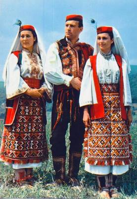
Beaucoup de paysans croates sont des types en bonne forme et robustes, dans les villages on peut voir de très gracieuses femmes, des femmes aux yeux grands et rêveurs et aux visages avec un air de langueur qui témoignent d'une gentillesse personnifiée. Igali montre plus de sensibilité aux charmes féminins que je ne le lui en aurait supposée de prime abord et une inclination prononcée à s'attarder plus longtemps que nécessaire dans ces villages bénis par ces beautés ; lorsque les demoiselles aux yeux sombres se rassemblent autour de nous les unes après les autres, je prends généralement l'initiative de monter en selle et de quitter les lieux.
Si un homme se frayait du jour au lendemain son chemin le long des rues de Londres sur une de ces machines volantes depuis longtemps attendues, le Cockney moyen montrerait à peine ce réel étonnement que trahit l'attitude de ces villageois croates pendant que nous roulions au milieu d'eux et descendons de machine.
Cet après-midi mon bicycle provoque la première débandade depuis cet incident sans importance à Lembach, en Autriche. Une paysanne à la face basanée et une petite fille qui approchent, mènent un petit poney au poil épais attelé à une carriole d'osier à quatre roues ; leur modeste destrier ne montre aucun signe de nervosité jusqu'au moment où je m'écarte pour le croiser, alors, sans prévenir, il fait un saut soudain et rapide sur la droite, renverse presque la carriole et sans plus de façon s'emballe, descend un haut talus et va dans tous les sens dans un champ de céréales levées.
La vieille femme tire courageusement sur les rênes et arrive enfin à remettre le fugitif sur la route sans dommage aucun sauf pour les céréales. Toutefois ça aurait pu terminer beaucoup moins bien et cet incident illustre une des sources possibles d'ennuis pour un cycliste voyageant seul à travers des pays où les gens ne comprennent pas et où on ne peut s'attendre à ce qu'ils comprennent ce qu'implique rouler à bicycle ; la situation serait bien sûr plus grave encore dans un village où, ne parlant pas la langue vernaculaire, on ne pourrait faire entendre sa propre défense. Les gens d'ici, certes pas aussi avisés que des serpents, sont en tout cas aussi inoffensifs que des colombes ; mais, dans le cas d'un cycliste effrayant un troupeau et provoquant une débandade avec des séquelles regrettables, comme des membres cassés, ou dans le cas d'un cheval blessé, ils sauraient difficilement comment réagir dans ces hypothèses, vu qu'il n'ont aucun précédent auquel se référer, et en l'absence de conseils sensés pour les guider, pourraient décider d'exercer une vengeance sommaire sur le bicycle. Dans un tel cas, le cycliste serait-il en droit d'user de son revolver pour protéger son bicycle?
Tel est le songe éveillé dans lequel je me plonge, pendant que je me repose sous un large mûrier en attendant qu'Igali me rejoigne ; il a promis que dans la journée je verrai la danse nationale de Slavonie et un village est maintenant visible au loin. Hamenitz, village situé au bord du Danube, où nous décidons de faire une halte d'une heure pour me donner l'opportunité promise du spectacle de cette danse dans son pays d'origine. C'est un spectacle étrange et intéressant. Une centaine de jeunes hommes vaillants et de jeunes filles sont affublés d'atours que personne d'autre ait jamais portés sauf les paysans croates et slavons ; les jeunes hommes couverts de passementeries et de broderies et les cheveux des demoiselles enlacés de profusions de fleurs naturelles en plus de leurs costumes de toutes les nuances possibles. Un large cercle est formé où les sexes sont alternés, les jeunes hommes étendent et joignent leurs mains face aux jeunes filles, ces dernières joignent leurs mains derrières leurs partenaires ; les tamburicas [[ Ndt : famille de luths à long manche, populaire en Europe du sud et en Europe centrale, notamment en Croatie, en Bosnie, en Serbie, en Slovénie et en Hongrie (parmi les diverses orthographes de cet instrument : tamboura, tamburitza...) Ref : Wikipedia https://tinyurl.com/y9lmeuel - un article avec de nombreuses photos sur croatianhistory.net https://tinyurl.com/y9yuw2l4 ]] aux cordes d'acier entonnent un air entraînant et vibrant dont le cercle des danseurs entreprend de battre le rythme avec les pieds tout en se déplaçant circulairement.
Orchestre de tamburicas à Dubrovnik, vers 1898
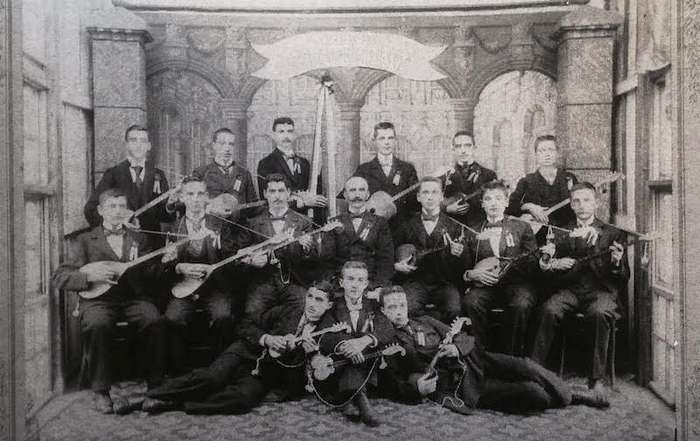
Source : croatianhistory.net, sur cette page https://tinyurl.com/y9yuw2l4
Orchestre croate de tamburicas
les instruments sur la droite qui ressemblent à des guitares sont égalements des tamburicas
Source : Youtube https://tinyurl.com/y7wvs65m
Plus entrainant et plus vite jouent les tamburicas, plus le spectacle s'anime, le cercle de danseurs s'efforçant d'en suivre le rythme. En même temps que l'enthousiasme augmente sur la scène les chapeaux des jeunes gens tendent à prendre une position comique sur le côté de leurs têtes, leurs visages prennent un air effronté et une couleur cramoisie, comme des hommes à moitié ivres, les yeux brillants et les visages radieux des jeunes filles affichent un plaisir inexprimable ; finalement la musique et le battement de pieds terminent en une prompte apothéose, l'embrassade est générale – sauf, bien sûr, pour les spectateurs moins chanceux comme Igali et moi – et la danse nationale slavonne s'achève.
A la nuit nous atteignons la ville puissamment fortifiée de Peterwardein, en face de laquelle juste de l'autre côté du pont flottant qui enjambe le Danube, est située la ville plus étendue de Neusatz [[ Ndt : la ville de Peterwardein ( Petrovaradin en français) est maintenant située en Serbie. Sa forteresse a été construite entre 1692 et 1780. Ref : Wikipedia https://tinyurl.com/y6us47xo et https://tinyurl.com/y9p66cfq - Wikisource https://tinyurl.com/y8wnphag - Neusatz est maintenant située en Serbie, son nom officiel est Novi Sad (Neusatz est son nom en allemand). La ville comptait environ 21000 habitants lors du passage de Thomas Stevens. Ref : Wikipedia https://tinyurl.com/y97867cz ]].
Rue principale de Peterwardein, vers 1900
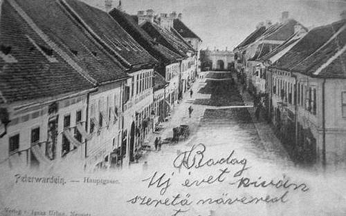
Source : Pinterest https://tinyurl.com/y9rgozqb
Pont flottant entre Peterwardein et Neusatz, vers 1900
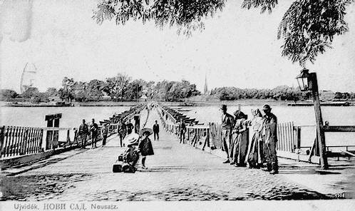
Source : Pinterest https://tinyurl.com/y9rgozqb
Neusatz, place de la liberté, en 1900
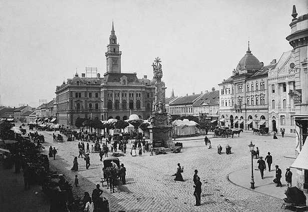
Source : Wikipedia domaine public
A Hamenitz nous avons fait connaissance du Professeur Zaubaur, le rédacteur en chef du Uj Videk, lequel nous a devancé maintenant en empruntant un vapeur sur le Danube ; et après que nous avons entreposé nos machines à notre hôtel à Peterwardein il nous pilote de l'autre côté du pont flottant dans le crépuscule, jusque dans un de ces bars à vin en plein air, si communs dans cette partie du monde. Ici à Neusatz j'écoute la musique tzigane hongroise originale pour la dernière fois dans ma traversée de l'Europe, je vais devoir sous peu faire mes adieux au territoire hongrois [[ Ndt : rappelons que le royaume de Croatie-Slavonie était une entité au sein de la monarchie austro-hongroise. Neusatz à cette époque fait partie du royaume de Hongrie ]] car Neusatz est sur la rive hongroise du Danube. Le professeur n'a de toute évidence pas laissé le temps à l'herbe de pousser entre ses pieds depuis qu'il nous avait quitté il y a à peine une heure à Hamenitz, vu qu'il a déniché dans cet intervalle le seul locuteur de langue anglaise en ville, la bonne dame Schrieber, une dame autrichienne qui vivait antérieurement à Vienne mais maintenant habite à Neusatz avec son mari, un avocat connu. Cette dame parle un anglais fluent. Pas encore agée de vingt-cinq ans, elle est très, très avisée, et entre autres choses elle informe ses amis qui font cercle autour de nous, en train d'écouter le flot inintelligible – pour eux – de mots étrangers, que les hommes anglais sont des "êtres très sérieux" une information qui arrache à Igali une remarque vraiment compatissante : rien moins que la déclaration saisissante qu'il ne m'a pas vu sourire depuis que nous avons quitté Budapest ensemble il y a une semaine! "Après avoir vu la danse slavonne, vous devriez absolument voir la danse nationale hongroise," opine madame Schrieber ; ajoutant, "c'est un joli spectacle de danse à voir pour un anglais, bien qu'elle soit si enjouée que les dames anglaises ne voudraient ni la danser ni même la regarder". Avant que nous quittions la compagnie de cette dame divertissante, elle fait savoir que si je m'installais à demeure en Hongrie, elle connait une très jolie jeune femme de seize printemps, qui, ayant ouï dire de mon "extraordinaire voyage" est déjà prédisposée en ma faveur, et qu'avec un peu de tact amical et de savoir-faire de sa part – de madame Schrieber – accepterait sans aucun doute de renoncer à une longue cour formelle et s'abandonnerait coeur et âme si je me déclarais. J'imagine difficilement interrompre à mi chemin mon voyage autour du monde, même pour une perspective si tentante et je recommande la belle Hongroise à Igali ; mais "la jeune personne n'a jamais entendu parler de monsieur Igali, et donc il ne tentera pas sa chance."
"Est-ce que la jeune demoiselle patienterait jusqu'à ce que j'ai achevé mon voyage autour du monde?"
"Oui ; elle acceptera avec beaucoup de plaisir ; je veillerai à ce qu'elle patiente ; et je sais que vous reviendrez, car un anglais n'oublie jamais une promesse." Dorénavant, quand Igali et moi entrons dans une phase de sifflottement, "Yankee Doodle" est supplantée par "The girl I left behind me" [[ la fille que j'ai laissée ]], à son grand dam, car il ne comprend pas la raison de ce changement et considère "Yankee Doodle" comme un air bien meilleur.
The girl I left behind me
De fait, Igali est devenu si attaché à cette antienne américaine qu'il informe le professeur et éditeur du Uj Videk de l'occasion où il l'a entendu jouer par un orchestre à Szekszard. Et quand après souper nous sommes plusieurs à nous promener dans les rues de Neusatz, le professeur passe un bras autour du mien et suite à l'allusion d'Igali me sollicite la faveur de siffler cet air pour lui. J'essaye d'esquiver ce devoir patriotique et le faire retomber sur Igali en complimentant ses qualités de siffleur ; mais, après tout, le devoir m'incombe et je siffle cet air doucement et avec enthousiasme pendant que nous marchons et que le professseur, qui porte des lunettes et arbore la contenance d'un sage, salue de la tête ses connaissances parmi ses concitoyens que nous croisons.
Le juge militaire de Neusatz partage avec madame Schreiber la vertu de parler plus ou moins anglais ; mais ce soir le juge n'est pas en ville. Cependant l'entreprenant professeur est à l'affût de son retour et lundi matin à 5 heures 30, alors que nous sommes en train de nous habiller notre chambre est envahie par le professeur, le juge militaire imposant et apparemment très allègre, un lieutenant d'artillerie slavon et un droguiste de leurs amis. Le juge militaire et le lieutenant possèdent et pratiquent le bicycle, les seuls à Neusatz et Peterwardein, et le juge est "furieux" – comme il le dit lui-même – que le tribunal tienne audience le lundi et ce lundi spécialement chargé, sinon il serait des plus heureux de nous accompagner jusqu'à Belgrade.
Le lieutenant va chercher son bicycle pour nous accompagner jusqu'au village suivant. Peterwardein est une place forte et en tant que position de contrôle du Danube elle est équipée de trente canons de gros calibre, une batterie certainement pas à prendre à la légère, postée sur un site si prominent que le mont où est construit la forteresse de Peterwardein. Comme le rédacteur en chef et les autres à Eszek l'ont fait, ici-même le professeur, le juge et le droguiste s'unissent en une protestation amicale contre mon objectif d'aller en bicycle jusqu'en Asie et en particulier en Chine, "parce que tout le monde sait que c'est notoirement dangereux" disent-ils. De fait ces gens ne peuvent pas comprendre pourquoi un Anglais ou un Américain au fait des dangers qui l'attendent persiste à s'aventurer ainsi ; quand en réponse à leurs questions j'annonce sans ostentation mon intention de poursuivre, en dépit des dangers vraisemblables et des difficultés probables, tous, à tour de rôle me serrent les mains comme se résignant à contre-coeur à ma détermination téméraire, et le juge jouant le rôle de porte-parole se fait l'écho et l'interprète des sentiments de ses compagnons en s'exclamant :"Angleterre et Amérique ad vitam aeternam! Ce sont les plus grands peuples de la terre!" Le lieutenant, interrogé sur la question par le juge et le professeur hausse seulement les épaules et n'ajoute rien, comme agit un homme dont le premier des devoirs est de cultiver un suprême dédain pour le danger sous toutes ses formes.
Tous nous accompagnent aux portes de la ville et après de mutuels adieux et assurances de sympathie, nous nous mettons en selle et roulons le long du Danube, avec le big mastiff du lieutenant qui trotte gravement à côté de son maître, pendant qu'Igali quelquefois en vue et quelquefois hors de vue ferme la marche. Après que le lieutenant nous a quitté il nous faut avancer lentement sur notre parcours ennuyeux qui s'élève sur les pentes du massif de la Fruskagora pendant plusieurs kilomètres [[ Ndt : la Fruška gora est un massif montagneux située maintenant en Serbie ; altitude maximale 539 mètres ]]. Pour Igali c'est une matinée plutôt aventureuse. L'ombre de la forteresse de Peterwardein était encore sur nous qu'il fut renversé en passant sous une branche de mûrier en saillie qui faillit détruire sa casquette de jockey ; peu après le départ du lieutenant il a une altercation avec une bande de gitans qui le rendent responsable de ce que leurs chevaux soient partis en débandade après s´être détachés de leurs piquets et font des remarques grossières sur l'évènement ; une heure après ça il tombe encore et casse une pédale et quand nous descendons de selle à Inđija pour notre halte du midi il découvre que son ressort de selle s'est brisé au milieu. Il examine tristement la rupture provoquée par la rudesse des routes de la Fruška Gora et envoie quelqu'un parcourir le village à la recherche d'un mécanicien capable de se charger de la réparation ; il regarde mon Columbia avec mélancolie et me demande l'adresse où on peut en commander un similaire [[ Ndt : Igali Svetozar était venu faire un séjour en France et en 1883 ou 1884 a fait le trajet de retour dans son pays, soit de Montpellier à Budapest, sur un grand-bi. Il a relaté ce voyage dans un livre sous le titre : Montpelliertől Budapestig Velocipéden (de Montpellier à Budapest à bicycle). De ce que j'ai pu comprendre, il possédait un grand-bi de la marque Surrey Machinist's Company, une marque de Londres connue pour ses modèles nommés "Invincible", commercialisés de 1876 à 1889. C'était des grand-bi légers et considérés haut de gamme. On peut penser que Igali Svetozar continuait à rouler sur cette machine et que c'est sur ce grand-bi qu'il roulait en compagnie de T. Stevens. Ref : Montpelliertől Budapestig Velocipéden https://tinyurl.com/yadme2hl - antique-bicycles.net https://tinyurl.com/ydxv26on - gracesguide.co.uk https://tinyurl.com/y7dd2bps
Grand-bi Surrey Machinist Co "Invincible", modèle vers 1885,
vraisemblablement la marque et le modèle du grand-bi de Igali Svetozár
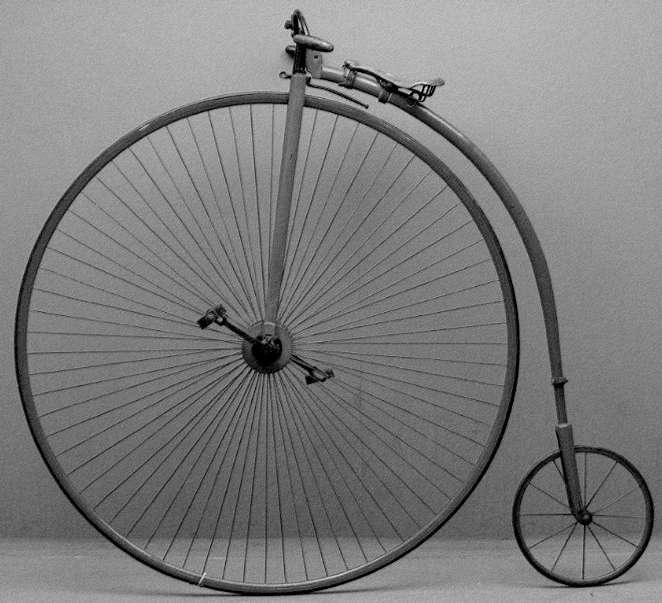
Le forgeron n'est pas en mesure de réparer le ressort, cependant il fait un bon travail sur la pédale ; il faut à un menuisier et son assistant travailler l'après-midi de treize heures trente à seize heures trente pour fabriquer une pièce rainurée en bois pour fixer entre le ressort et le cadre de sorte qu'Igali puisse rouler avec moi jusqu'à Belgrade. Il n'aurait fallu que quinze minutes à un menuisier Yankee pour mener à bien cette tâche.
Toute la matinée nous avons traversé un éperon de la Fruška Gora et notre progression a été lente. Les routes par ici sont principalement constituées du terrain naturel, donc de qualité à l'avenant ; mais les superbes vues du Danube, avec son abondance de forêts verdoyantes alternant avec des aires cultivées plus vertes encore sont la récompense pour la peine supplémentaire. Des vergers de pruniers dont les branches sont penchées par le poids de fruits encore verts bordent les pentes des collines de leur luxuriance ; de fait toute cette large et riche vallée du Danube a l'air de sommeiller et sourire consciente de son abondance débordante ; pendant des jours nous avons roulé sur des routes traversant des vignobles, des vergers et de vastes espaces de céréales plein de promesses. Il n'y a que trente kilomètres de Inđija à Semlin, sur la rive opposée se trouve Belgrade, depuis que nous avons quitté le massif de la Fruška Gora la région est une plaine et les routes sont plutôt faciles. Mais naturellement Igali se montre deux fois plus prudent depuis sa succession de mésaventures ce matin et en attendant qu'il me rejoigne je m'étends sous les mûriers près du village de Batainitz et j'observe les montagnes bleues de Serbie qui se dessinent au sud dans la brume du matin, quand il arrive et propose que nous nous arrêtions à Batainitz pour la nuit, ajoutant pour me persuader, "il n'y aura pas de ferry-boat la nuit pour traverser à Belgrade, et nous pouvons facilement prendre le premier bateau du matin." J'accepte avec réticence non sans avoir plaidé en faveur d'aller jusqu'à Semlin cet après-midi.
Pendant qu'on prépare notre dîner nous sommes pris en main par le plus important commerçant du village et nous allons "vaguer" dans un verger de petits fruits et de poires primeures puis de là nous nous rendons à un grand campement de gitans à la lisière du village, où, en remerciement pour avoir pris le temps de les visiter – et de quelques kreuzers en supplément – la "fleur du campement", une jeune demoiselle en pleine croissance, au teint du ton d'une éclipse totale, embrasse le dos de nos mains ; les hommes jouent un battement monotone avec des baguettes sur des auges renversées pendant que les femmes dansent joyeusement et avec une certaine grâce. Ces bandes de gitans sont de joyeux groupes de vagabonds, ils ont l'air de ne se préoccuper de rien au monde ; les hommes ont de longs cheveux flottants et au costume commun du paysan ils ajoutent quantité d'ornementations et le portent avec une grace désinvolte et sans ostentation qui ne manque pas d'un certain charme en dépit d'un boutonnage débraillé et de visages sales. Les femmes portent un minimum de vêtements et une profusion de perles et de colifichets, et les enfants vont totalement nus ou à peine vêtus.
Il est manifestement évident que nous approchons de l'Orient, cela se note dans les costumes semi-orientaux des paysans et les bandes vagabondes de gitans au fur et à mesure que nous approchons de la capitale Serbe. A Eszek un costume oriental est sufffisamment rare pour être une curiosité, et il en est ainsi jusqu'au sud de Peterwardein à partir d'où les costumes nationaux de Slavonie et de Croatie sont progressivement mélangés avec le fez à pampille [[ Ndt : Le fez ou tarbouche est un couvre-chef masculin en feutre, souvent rouge, en forme de cône tronqué, orné d'un gland noir fixé sur le dessus. Ce bonnet sans bord, originaire de la Grèce antique, a été adopté par de nombreux groupes ethniques et religieux pendant les siècles suivants et notamment dans l'Empire Ottoman du XIXe siècle. Ref : Wikipedia https://tinyurl.com/y8ymxxpb ]], les ceintures en tissu enroulées autour de la taille et les larges pantalons flottants des régions de l'Est. Ici à Batainitz les pieds sont enchassés dans de grossiers mocassins en peau attachés avec des lanières de cuir et chevilles et mollets sont entourés de bandes de toile épaisses de couleur rouge attachées de la même façon.
Le fez
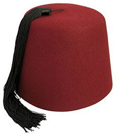
Le spectacle autour de notre hôtel après notre arrivée ressemble à un meeting populaire ; c'est seulement au cours des six derniers mois que le bicycle a été introduit à Belgrade et bien que quelques villageois soient allés à Belgrade et en aient vus, la grande majorité des gens de Batainitz en ont seulement entendu suffisamment parler pour exciter leur curiosité à en voir un de plus près. De plus, vu l'intérêt suscité par mon prochain passage à Belgrade, du fait de la récente introduction du bicycle dans cette capitale, ces villageois, jusque dans les environs à douze kilomètres ont plus entendu parler de mon voyage que les gens dans des villages plus loin au nord, et leur curiosité est stimulée en conséquence.
Nous sommes réveillés à cinq heures la matin suivant ; la même foule curieuse rend impossible le passage dans les couloirs de pierre labyrinthiques de l'hôtel, bouche le passage devant nous, nous contemple intriguée et discute de nous et de notre apparence dès qu'elle peut nous voir en attendant avec une louable patience de pouvoir jeter un coup d'oeil sur nos merveilleuses machines. C'est une masse hétéroclite et de plus une assemblée en haillons ; de vieilles femmes se signent pieusement quand, après un léger repas de pain et de lait nous surgissons dehors avec nos bicycles, prêts à partir ; un murmure spontané d'admiration s'élève au moment où nous montons en selle et s'amplifie quand je me retourne et ôte mon casque en déférence à l'hommage qui nous est rendu par ces coeurs vraiment chaleureux, cachés sous les guenilles d'une pauvreté droite, et à moitié illettrés. Il faut peu pour se gagner les coeurs de ces gens rudes et sans prétention. Deux heures de routes depuis Batainitz, sur des chaussées de qualité acceptable nous amènent à Semlin, une ville slavone plutôt importante, presque en face de Belgrade, qui est du même côté du Danube mais séparée d'elle par un large affluent nommé la Save [[ Ndt : affluent de la rive droite du Danube qui conflue à Belgrade ]]. Des ferry-boats font régulièrement la navette entre les deux villes et, après une heure passée à débusquer différents officiels pour obtenir l'autorisation pour Igali de traverser pour entrer sur le territoire Serbe sans passeport en règle, nous échappons à la foule insensée des Semlinites en embarquant sur le ferry-boat et dix minutes plus tard nous échangeons des signes avec trois cyclistes serbes qui sont venus au débarcadère en complet uniforme pour nous rencontrer et nous accueillir à Belgrade [[ Ndt : c'est le mardi 16 juin 1885, il est huit heures du matin. Ref : Budapesttöl Belgrádig Veloczipéden, Irta Igali Svetozár (De Budapest à Belgrade à Bicycle avec Thomas Stevens, par Igali Svetozár - publié en 1885 à Budapest) http://www.mek.sk/11200/11222/ ]].
De nombreux de lecteurs seront sans aucun doute aussi surpris que moi quand j'ai appris qu'à Belgrade, la capitale du petit Royaume de Serbie, indépendant seulement depuis le Traité de Berlin [[ Ndt : Traité de Berlin (1878), accord entre les puissances européennes concernant notamment le contrôle de la Russie sur les Balkans et sur l'Arménie ; il a reconnu l'autonomie de la principauté de Bulgarie et l'indépendance de la Roumanie, de la Serbie et du Monténégro, vis-à-vis de l'Empire ottoman. Ref : Wikipedia https://tinyurl.com/y82ah9h4 ]], un bicycle club a été créé en janvier 1885 et que maintenant, en juin de cette même année, c'est un club promu à un grand avenir, de trente membres dont douze sont des cyclistes possédant leur propre bicycle. Leur club est nommé, en français, La Société Vélocipédique Serbe ; en serbe c'est imprononçable pour un Anglo-Saxon et s'écrit seulement en caractères cyrilliques [[ Ndt : l'alphabet cyrillique moderne serbe a été créé en 1818 et est devenu l'écriture officielle de la Serbie en 1868. Ref : Wikipedia https://tinyurl.com/ydc3bkog ]]. Le président, Milorade M. Nicolitch Terzibachitch est le représentant du Cyclist' Touring Club pour la Serbie et le pilier de cette organisation au sud-est, leur club étant l'extrême avant-poste cycliste dans cette direction. Notre arrivée a été annoncée à l'avance et le club avec prévenance a "vu" les autorités serbes et ainsi tellement facilité les formalités d'entrée dans leur pays que les fonctionnaires ne prétendent même pas vérifier mon passeport ou mes effets ; un évènement presque sans précédent dois-je dire, car ici ils sont plus tâtillons au sujet des passeports que peut-être n'importe quel pays d'Europe, sauf la Russie et la Turquie.
C'est ici à Belgrade qu'Igali et moi allons nous séparer, lequel, fortuitement a postulé pour et vient juste de recevoir son certificat de nomination comme représentant du Cyclist' Touring Club pour Duna Szekesö et Mohacs [[ Ndt : Duna Szekesö est un village de Hongrie, situé dans le district de Mohacs. Sur certains sites internet il est indiqué que Igali Svetozar est né à Duna Szekesö, d'autres indiquent Somberek, ces deux villages sont dans le même département et distants d'environ 15 kilomètres. A cette époque, Igali Svetozar réside à Duna Szekesö où il exploite les vignobles dont il est propriétaire. Précisons que de Budapest à Belgrade les deux hommes sont passés par des régions viticoles à l'époque et qui le sont encore de nos jours ]], une distinction dont il se montre particulièrement fier. En vérité il n'y a pas d'autre cycliste dans tout son district et probablement encore pour un certain temps ; je le recommande chaleureusement à tout touriste cycliste venant faire une excursion le long de la vallée du Danube ; il connait les meilleurs caves à vin de toute la région environnante et, en plus d´être un agréable et accomodant compagnon de route s'avèrera un frein salutaire à la vélocité irréfléchie de quiconque ayant une propension à l'effort excessif [[ Ndt : rappelons que Stevens se plaignait du rythme de Igali Svetozar (environ 5 à 6 km/heure¡ et sa propension à marquer des arrêts pour raisons diverses ]]. Cependant je ne vais malgré tout pas être entièrement abandonné à moi-même ; ces hospitaliers cycliste serbes ne sauraient songer à une telle chose. Je vais rester leur invité jusqu'à demain après-midi, moment à partir duquel Mr Douchan Popovitz, le meilleur cycliste de Belgrade, est désigné pour m'accompagner de la Serbie jusqu'à la frontière Bulgare. En y arrivant je ne serais pas plus surpris que ça de voir un cycliste bulgare s'offrir pour m'accompagner jusqu'à la Roumélie et ainsi de suite jusqu'à arriver à Constantinople ; de fait je ne me serais jamais attendu à trouver si plaisante et enthousiaste compagnie de cyclistes dans ce recoin du monde.
[[ Ndt : dans son livre Budapesttöl Belgrádig Veloczipéden, Irta Igali Svetozár (De Budapest à Belgrade à Bicycle avec Thomas Stevens, par Igali Svetozár - publié en 1885 à Budapest), Igali Svetozar signale que les deux hommes décident de garder un souvenir de ce parcours fait ensemble et se font photographier, peu après leur arrivée à Belgrade et sans avoir pis le temps de se changer ni nettoyer leurs machines. Cette photo figure dans son livre. Nous la reproduisons ci-après, peut-être la seule photo de Thomas Stevens pendant son voyage autour du monde. ]]
Thomas Stevens et Igali Svetozár, le mardi 16 juin 1885,
peu de temps après leur arrivée à Belgrade (Serbie)
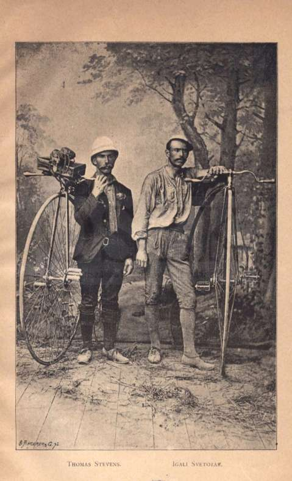
Source : Budapesttöl Belgrádig Veloczipéden, Irta Igali Svetozár
La bonne camaderie et l'hospitalité de ces Serbes n'ont aucune borne ; Igali et moi sommes invités à festoyer et promenés en voiture toute la journée.
Belgrade est une ville puisamment fortifiée, qui occupe une position de contrôle sur une colline qui domine le Danube ; ayant été un poste frontière important dans un pays qui fut un terrain disputé entre Turcs et Chrétiens pendant des siècles, ce fut un prix convoité perdu et gagné sur l'échiquier diplomatique, ou, pire encore, un ballon entre armées adverses et monarques batailleurs. Bien avant l'apparition de la Turquie ottomane comme un petit nuage sombre, pas plus grand que la main, à l'horizon sud-est de l'Europe, qui allait s'étendre et écraser la fleur bourgeonnante du christianisme et de la civilisation dans ces régions les plus belles du continent, Belgrade était une importante forteresse romaine et aujourd'hui son musée national et ses magasins d'antiquités sont particulièrement riches en trésors d'antiquités byzantines, dénichés de temps à autre dans la forteresse elle-même et dans la région environnante sous sa protection. Les vieilles pièces et les reliques de toute sorte sont en fait si abondantes à Belgrade que pendant que je suis debout devant la vitrine d'un antiquaire à regarder les collections, le propriétaire sort et me donne une petite poignée de pièces byzantines en cuivre comme une sorte d'appât susceptible peut-être de m'inciter à entrer et regarder de plus près son stock.
Par le fameux traité de Berlin les Serbes ont obtenu leur complète indépendance, leur pays, de principauté payant tribut au sultan est devenu un royaume indépendant avec un Serbe sur le trône, ne devant allégeance à personne, et le peuple n'a pas cessé de montrer de mille petites manières différentes sa profonde appréciation du changement ; à côté de remplir les galeries de tableaux de leur musée de portraits de héros serbes, de drapeaux militaires et autres nobles souvenirs de leur histoire, ils ont entre autres moyens utiles de manifester leur sentiment quant au départ du croissant dominateur, transformé la mosquée turque en usine à gaz [[ Ndt : il s'agit d'un site industriel de production de gaz inflammable à partir de la houille ]]. Une des reliques les plus intéressantes de la capitale serbe est un vieux puits romain, creusé depuis le bord de la colline où est édifiée la forteresse jusque sous le niveau du Danube, pour approvisionner la ville en eau lorsque l'accès au fleuve était empêché par une armée assiégeante. C'est quelque chose d'énorme, un mur tubulaire en briques de douze mètres de diamètre et de soixante seize mètres de profondeur, à l'extérieur duquel un escalier de pierre s'enroule tout autour du haut jusqu'au fond de ce puits. Des ouvertures dans le mur, de deux mètres sur un mètre se présentent à intervalle régulier tout au long de la descente, et, pendant que nous suivons notre guide vêtu de guenilles vers le fond, vers l'humidité et l'obscurité à la faible lumière d'une bougie de suif dans une lanterne cassée, je ne peux m'empêcher de penser que ces ouvertures plus que commodes donnant sur les profondeurs sombres et liquides ont, au cours de la tragique histoire de Belgrade, été sans aucun doute responsables de la mystérieuse disparition de plus d'un gêneur. Ce n'est pas sans une certaine crainte involontaire que je prends la lanterne des mains du guide – dont l'aspect général est, sans qu'il le veuille, peu fait pour rassurer – et me tenant à l'une des ouvertures, contemple les profondeurs lugubres pendant qu'il me tient par ma veste par précaution.
Il y a un panorama magnifique depuis les remparts de la forteresse de Belgrade, qui s'ouvre sur la large vallée du Danube – qui ici serpente comme s'il voulait accorder impartialement ses faveurs à la Hongrie, la Serbie et la Slavonie – et de la Save. Les soldats serbes campent dans des petites tentes à divers emplacements sur le terrain de la forteresse et ses environs, ou se prélassent à l'ombre de quelques arbres à la verdure clairsemée parce qu'aujourd'hui sous le soleil c'est une vraie fournaise. Avec une population qui ne dépasse pas un million et demi d'habitants, on me dit que la Serbie a sur pied une armée de cent mille hommes ; et en Serbie, en cas de nécessité chaque homme est enrôlé. Quand on descend du ferry-boat et qu'on regarde autour de soi on n'a pas besoin d'interprète pour savoir qu'on a quitté l'Occident depuis l'autre rive de la Save, et les rues de Belgrade offrent à l'étranger attentif beaucoup de curiosités intéressantes sous forme de vêtements élaborés et de modes de vie orientaux qu'il rencontre pour la première fois. L'après-midi nous visitons le musée national de numismatique, d'armes et d'antiquités romaines et serbes.
Dans la soirée un banquet nous est donné par le club dans un bar à vin en plein air, où de la musique serbe est jouée par un groupe musical féminin, et pour la nuit un hébergement royal nous est assigné au manoir hospitalier du père de Mr Terzibachitch, le négociant le plus puissant de Serbie et fournisseur de la cour. Mercredi matin nous faisons une visite générale de la ville, en plus de visiter le siège du club où nous découvrons qu'il a été fait acquisition d'un élégant nouveau livre de souvenirs pour recevoir nos autographes. Les cyclistes belgradois ont peint des noms sur leurs bicycles, comme les noms que l'on peint sur les bateaux à vapeur ou les yachts : "Fairy," (Fée) "Good Luck," (Bonne Chance) et "Servian Queen," (Reine de Serbie) étant les exemples les plus représentatifs. Les cyclistes ici sont des fils de citoyens prééminents et d'hommes d'affaires de Belgrade, et, bien qu'ils s'habillent et se comportent comme des gentlemen acccomplis, on croit cependant déceler une sorte d'expression sauvage dans les yeux comme si leur raffinement était à peine établi ; en fait, cette expression singulière est plus notable à Belgrade et est apparemment plus courante ici qu'en n'importe quel endroit que j'ai visité en Europe. Je suppose qu'il s'agit d'une particularité qui est devenue héréditaire chez les citoyens d'une ville si souvent et si longtemps le théâtre d'un destin incertain et de troubles politiques inquiétants. C'est l'expression presque saisie d'effroi de gens avec un sentiment d'insécurité permanent. Mais ils ont un grand coeur, un comportement spontané de camaderie et quand, pendant que nous sommes en train de parcourir le musée, nous croisons le représentant de Sa Majesté Britannique auprès de la cour de Serbie, en train de faire la même chose que nous, l'un d'eux, casquette à la main, approche sans hésiter ce gentleman et avec un véritable enthousiasme annonce qu'ils sont accompagnés par un de ses compatriotes qui fait le tour du monde à bicycle. Ce gentleman plein de dignité et au sang froid est en retour loin d´être aussi démonstratif qu'ils l'avaient certainement anticipé ; et sur ce ils apparaissent confondus et frappés d'étonnement.
Trois attelages de cyclistes et de leurs amis nous accompagnent sur une douzaine de kilomètres jusqu'à une mehana ( le nom oriental dans les environs pour hôtels, auberges etc... ) ; Douchan Popovitz et Hugo Tichy, le capitaine du club, roulerons avec moi les quarante-cinq kilomètres jusqu'à Semendria [[ Ndt : Smederevo en français ; en 1428 la ville fut capitale de la Serbie. Ref : site officiel de la ville http://www.smederevo.org.rs/ ]], et à quatre heures nous enfourchons nos bicycles et nous éloignons vers le sud de la Serbie. Une fois arrivés à la mehana du vin est servi et les deux serbes qui m'accompagnent et ceux qui s'en retournent s'embrassent selon le mode et la coutume de leur pays ; un échange général de poignées de mains et de bonne chance et les attelages retournent vers Belgrade pendant que nous cyclistes roulons et nous trainons successsivement sur une route boueuse – car il a plu depuis midi – et montagneuse jusqu'à 7.30 quand des parents de Douchan Popovitz, dans le village de Grotzka, nous offrent aimablement l'hospitalité de leur maison jusqu'au matin, ce dont nous n'hésitons pas à profiter. Précédemment à la mehana, au moment de nous séparer, le solennel Igali a déroulé cette longue ceinture bleue qu'il porte autour de la taille, dont l'ajustement et le réajustement ont été un trait familier des aventures de cette dernière semaine, et me l'offre comme un souvenir de lui, une attention que je retourne en lui offrant plusieurs des pièces byzantines que m'a données l'antiquaire de Belgrade comme mentionné antérieurement. [[ Ndt : si Stevens met une certaine ironie pour relater cette séparation, comme d'ailleurs tout au long de ce voyage de Budapest à Belgrade, ce n'est pas le cas d'Igali Svetozar dans son livre précédemment cité. Manifestement celui-ci a été marqué par le voyageur américain et a éprouvé de l'amitié pour lui. Citons ici les dernières lignes de ce livre, moment de leur séparation à la mehana, raconté par I. Svetozar : Finalement est venu mon tour de dire adieu. Je lui ai serré la main et pendant quelques instants aucun son n'est venu à mes lèvres puis j'ai pu prononcer quelques paroles : "Stevens" ai-je dit, voilà, nous nous séparons pour toujours! Il me regardait avec sérieux de ses yeux perçants. Il me comprenait. Il sourit à lui-même ; non, non Igali! a-t-il répondu et toujours en souriant il a pris sa pomme d'adam dans sa main droite pour montrer que les Chinois ne lui couperaient pas le cou. Non, non répéta-t-il avec son sourire. Adieu Stevens! Adieu Igali! Il s'est retourné et a pris la route, poussant sa machine dans la boue. Nous l'avons regardé jusqu'à ce qu'il disparaisse derrière le sommet d'une colline. Dans la voiture de retour à Belgrade, je n'ai pu dissimuler une larme traîtresse à Terzibachitch.]]
Vers Semendria, où le capitaine de route nous laissera pour prendre le chemin du retour, nous quittons le cours du Danube, que j'ai globalement suivi depuis deux semaines et découvrons comme de juste la vallée plus petite mais pas moins belle de la rivière Morava [[ Ndt : affluent droit du Danube ]] où nous avons l'intense satisfaction de trouver des routes qui sont à la fois sèches et planes, nous permettant en dépit de la chaleur caniculaire de rouler tête baissée à la vitesse de seize kilomètres heure jusqu'au village où nous faisons halte pour le déjeuner et les trois heures de sieste habituelle de midi. Me voyant griffonner mes notes avec un petit morceau de crayon à mine de graphite, le propriétaire de la mehana à Semendria, où nous buvons le verre de vin de l'adieu avec le capitaine de route, et qui admire l'Amérique et les Américains, rentre dans l'établissement durant une minute et en ressort avec un étui à crayons télescopique attaché à une cordelette de soie aux couleurs de la Serbie, qu'il met autour de mon cou en me demandant de le porter pendant ce voyage autour du monde et quand j'arriverai au terme de celui-ci de penser quelquefois à la Serbie.
Avec la ceinture bleu ciel d'Igali qui entoure ma taille et les couleurs nationales serbes encerclant affectueusement mon cou, je commence à ressentir un frisson héraldique me parcourir le corps et en vérité je me surprends à jeter des coups d'oeil pensifs sur le grand pistolet de cavalerie désuet que je vois là-bas enfoncé dans la large ceinture d'un conducteur de chariot à boeuf ; de plus je pense réellement qu'une paire de ces mocassins serbes seraient plutôt un bon équipement pour rouler à bicycle! [[ Ndt : ces mocassins, Onahak en serbe, sont des chaussures encore portées jusqu'à il y a une cinquantaine d'années dans les zones rurales du sud-est de l'Europe (Bosnie et Herzegovine, Bulgarie, Croatie, Macedoine, Roumanie and Serbie). En Serbie ils font partie du costume national traditionnel. Ref : Wikipedia https://tinyurl.com/yav8t9ko ]]
Onahak : chaussure paysanne serbe traditionelle
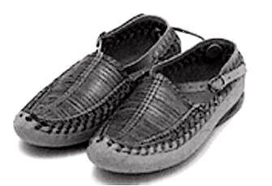
Source : https://www.malasrpskaprodavnica.com
Tout le long de la vallée de la Morava la route continue bien meilleure que ce que je m'attendais à trouver en Serbie et nous roulons allègrement ; les monts Resara couverts de sombres forêts de pins bordent la vallée sur la droite et par endroits s'élèvent en pics de taille respectable. Le soleil descend derrière les montagnes qui s'effacent, le crépuscule s'étend puis l'obscurité, à part la faible clarté accordée par la nouvelle lune ; notre destination est encore à plusieurs kilomètres devant. Finalement vers neuf heures nous arrivons sans incident à Jagodina [[ Ndt : environ 4500 habitants lors du passage de Stevens ]], la conscience satisfaite d'avoir couvert cent quarante-cinq kilomètres aujourd'hui en dépit d'avoir retardé notre départ le matin jusqu'à huit heures et des vingt kilomètres de route médiocre entre Grotzka et Semendria. Aujourd'hui Je n'ai pas eu à prendre de repos sous les mûriers au bord de la route pour permettre à mon compagnon de me rattraper ; le cycliste serbe est à la fois un homme plus rapide qu'Igali et que la route soit médiocre ou en bon état, plane ou accidentée il reste dans ma roue arrière ; ma propre ombre ne me suit pas plus fidèlement que ne le fait le "meilleur rouleur de Serbie".
Nous quittons Jagodina à 5.30 le matin suivant sur des routes un peu lourdes avec du sable par endroit, mais à part ça tout ce qu'un cycliste peut souhaiter. Pour traverser le pont sur la rivière Morava pour entrer à Ćuprija, on nous demande non seulement de le traverser à pied mais aussi de payer un droit de passage pour les bicycles, comme pour tout véhicule à roues. A Ćuprija il semble que toute la ville se soit dépeuplée, tant est grande la foule qui pullule à nos trousses. Bigarrée et pittoresque même dans ses haillons, c'est vainement que je tente de transmettre par écrit une idée juste de son aspect ; à côté des Serbes, des Bulgares et des Turcs, et des prêtres grecs qui ne manquent jamais d´être présents, apparaissent maintenant des Roumains avec d'énormes bonnets en peau de mouton dont les long côtés déchiquetés en laine se balancent sur leurs yeux et leurs oreilles, ou, s'il s'agit d'une personne plus "poseuse" sont découpés uniformément le long du bord donnant à ce couvre-chef l'aspect d'un petit toit de chaume rond [[ Ndt : il s'agit sans doute du papakha, bonnet en laine porté dans plusieurs pays de l'est de l'Europe ]].
Bergers de Petrosani (Roumanie) coiffés du papakha
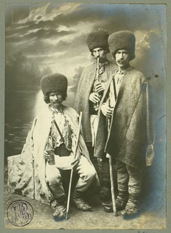
Source : WikipediaDomaine public https://tinyurl.com/ybd9fxpq
Les gamins dont la tâche quotidienne est de promener dans les rues la chèvre de la famille se joignent à la procession, tirant derrière eux leurs fardeaux à barbichette ; une vingtaine de chiens, surexcités au-delà de toute mesure par le tumulte général, s'ébattent et glapissent leur joyeuse approbation de tout ce qui est en train de se passer. Avoir de telles foules qui vous suivent jusque hors de la ville est incommodant pour une personne susceptible, c'est comme être chassé d'une communauté pour avoir chapardé des poulets sous le clair de lune ou pour quelque méfait en relation avec les notes d'hôtels. En des circonstances comme celle-là ces orientaux semblent perdre toute dignité ; les citoyens imposants, bien habillés, les prêtres, les officiers de l'armée se pressent au milieu de la foule des paysans et de la plèbe, manifestement plus enchantés d´être parmi ces créatures qu'ils ne devaient l'être tous les jours précédents.
A Deligrad nous passons par le champ de la bataille du même nom, où, en 1876, Turcs et Serbes étaient face à face. Au-dessus de Deligrad les collines marquées par les traces de la bataille, commandent à une vue superbe de la basse vallée de la Morava, plus belle encore depuis ce site et juste assez large pour saisir son entière beauté. Les Serbes remportèrent la bataille de Deligrad et pendant que je marque un arrêt pour admirer le superbe paysage depuis les collines vers le sud, je pense que leur général a fait preuve de grande sagacité en affrontant les envahisseurs à un endroit où la vallée de la Morava, le joyau de Serbie, s'étendait sous ses positions tel un panorama pour exciter par sa beauté le patriotisme de ses troupes ; ils ne pouvaient faire autrement que remporter la victoire, avec le plus bel endroit de leur pays bien-aimé s'étalant devant eux tel un tableau. Un grand canon, pris au Turcs, disposé avec son équipage au bord de la route est un témoin muet mais éloquent du courage serbe.
Quelques miles plus tard nous faisons halte pour déjeuner à Aleksinac, près de l'ancienne frontière , également le site d'une grande bataille pendant la lutte de la Serbie pour son indépendance [[ Ndt : Aleksinac était à la frontière avec la Turquie jusque environ 1878 quand avec la fin des guerres serbo-turques la Serbie a conquis son entière indépendance ]].
Aleksinac au 19eme siècle
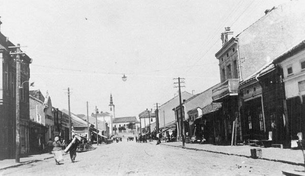
Source : By ZivojinMisic slike [GFDL or CC BY-SA 3.0], from Wikimedia Commons
Cette fois les Turcs furent victorieux, quinze mille Serbes et trois mille de leurs alliés Russes perdirent la vie ici face à la supériorité de la stratégie turque et Aleksinac fut réduite en cendres. Les Russes ont érigé un monument en granite sur une colline surplombant la ville en mémoire de leurs camarades qui périrent lors de ces combats.
En général les routes sont meilleures aujourd'hui qu'hier et à six heures nous arrivons à Niš, à cent vingt kilomètres depuis notre point de départ ce matin et deux cents quatre vingt depuis Belgrade [[ Ndt : Niš est une des plus ancienne ville des Balkans et d'Europe ; environ 16000 habitants lors du passage de Stevens. Ref : Wikipedia https://tinyurl.com/ycgl99wx ]].
Niš entre les deux guerres mondiales
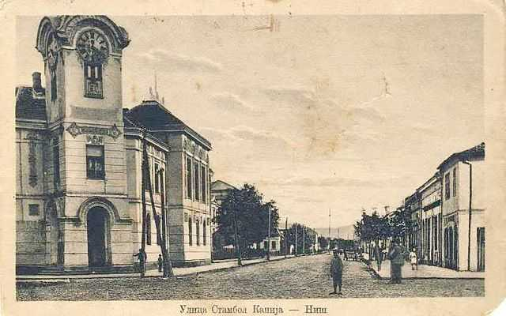
Source : WikipediaDomaine public
Quand nous entrons dans la ville un groupe de prisonniers en train de travailler sur les fortifications oublient pour un moment le cliquetis de leurs entraves et de leurs chaînes et l'infortune de leur état suffisamment longtemps pour nous gratifier d'un mugissement effervescent, et les gardes qui les surveillent négligent pour une fois au moins de les rappeller à l'ordre, car leur attention est aussi entièrement absorbée par le même extraordinaire spectacle. Niš se révèle être une ville complètement orientale, ici je vois les premières femmes turques les traits cachés sour leurs yashmaks blancs [[ Ndt : le yashmak est un type de voile turc, en toile fine et transparente couvrant la tête et le visage porté par des femmes mulsumanes, notamment sous l'empire ottoman ]].
Femme turque portant le yashmak
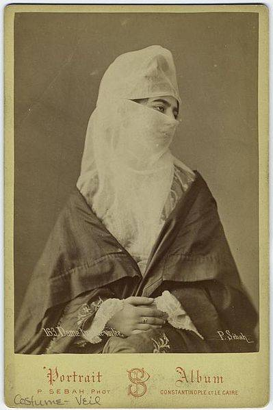
Source : WikipediaDomaine public
A sept heures ou huit heures au matin, quand il fait relativement frais et que les chalands parcourent le marché, circulant en négociant les provisions du jour, les rues se voient très animées ; mais pendant le pic de chaleur de la journée la scène se transforme en un spectacle de laisser-aller et d'indolence ; de respectables citoyens sont en train de fumer le narghuilé (le hubble-bubble de Mark Twain), ou de dormir quelque part hors de vue ; toute besogne est généralement suspendue et dans chaque coin et recoin sombre on trouve un gueux basané étendu de tout son long, parfaitement heureux et satisfait simplement si on lui permet de faire un somme en paix pendant que le temps passe. [[ Ndt : Mark Twain était fumeur de pipes et cigares. Le terme hubble-bubble semble avoir été un terme d'usage pour le naghuilé aux Etats-Unis à cette époque. Plusieurs auteurs mentionnent dans diverses biographies de Mark Twain que celui-ci fumait le hubble-bubble, et même qu'il s'en était confectionné un ; notamment Albert Bigelow Paine qui a vécu quelques temps avec Mark Twain et rédigé une biographie : Mark Twain a Biography the Personal and Literary Life of Samuel Langhorne Clemens, mentionne dans celle-ci : "He read at odd moments; at night voluminously until very late, sometimes. Already in that early day it was his habit to smoke in bed, and he had made him an Oriental pipe of the hubble-bubble variety, because it would hold more and was more comfortable than the regular short pipe of daytime use." Il lisait à des heures irrégulières ; beaucoup la nuit, jusque très tard parfois. Déjà dans ce jeune temps il avait cette habitude de fumer au lit et il s'était confectionné une pipe orientale du type hubble-bubble, parce qu'elle contenait plus de tabac et était plus commode que la petite pipe courante qu'il fumait la journée. et dans The Boy's Life of Mark Twain : "At night, propped up in bed—a habit continued until his death—he was likely to read until a late hour. He enjoyed smoking at such times, and had made himself a pipe with a large bowl which stood on the floor and had a long rubber stem, something like the Turkish hubble-bubble. He liked to fill the big bowl and smoke at ease through the entire evening. La nuit, étendu sur le lit, il aimait lire jusqu'à une heure tardive - une habitude qu'il conservera jusqu'à sa mort. Il appréciait fumer pendant ces moments là et s'était confectionné une pipe avec un grand fourneau (Ndt : en terme pipier, la partie de la pipe où on met le tabac) qui était posée au sol et avait un long tuyau, dans le genre du hubble-bubble turc. Il aimait bien remplir le grand fourneau et fumer sans se préoccuper pendant toute la soirée. Ref : Mark Twain: A Biography, by Albert Bigelow Paine, sur Gutenberg.org https://tinyurl.com/y7u9hulh et The Boys' Life of Mark Twain by Albert Bigelow Paine, sur Guntenberg.org https://tinyurl.com/y9n53cc3 ]]
Mark Twain en 1909
Hommes fumant le narguilé (en Turquie, photo de 1905)
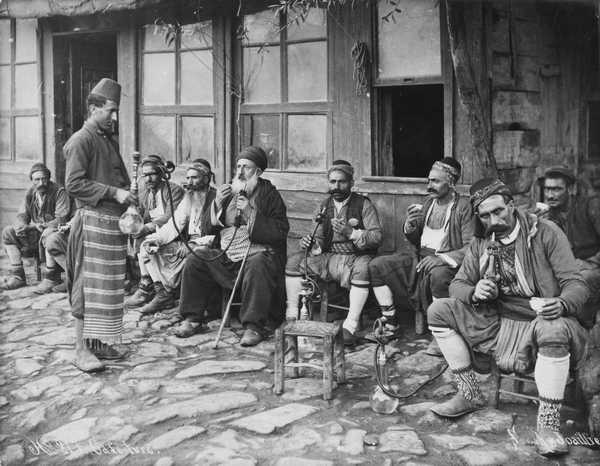
Source : WikipediaDomaine public
La tour des crânes en 1878
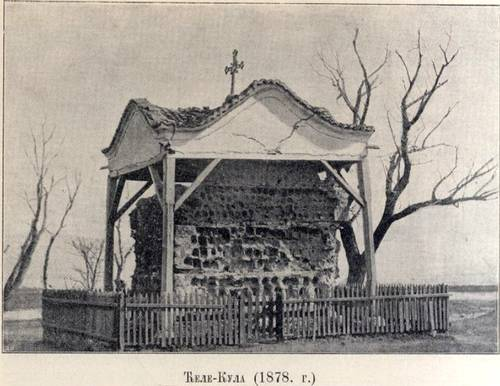
Source : WikipediaDomaine public
La chapelle édifiée en 1894 autour de la tour des crânes (photo de 1902)
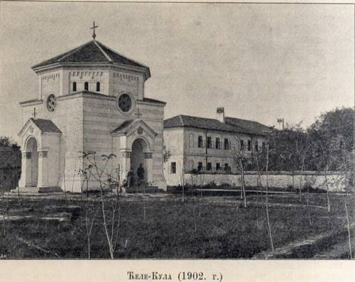
Source : WikipediaDomaine public
La tour des crânes, à l'intérieur de la chapelle
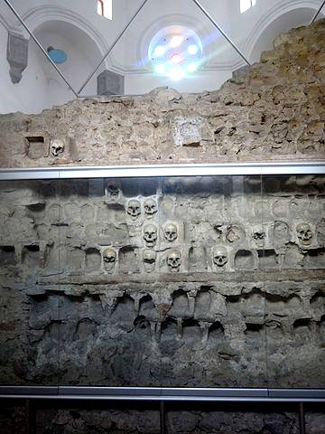
Source : By Djina [CC BY-SA 3.0 (https://creativecommons.org/licenses/by-sa/3.0)], from Wikimedia Commons
Une allée de pruniers en pleine floraison ombragent une rue unie qui poursuit sur plusieurs kilomètres après Niš, mais un violent orage pendant la nuit rend le roulage plutôt collant, toutefois la route se fait progressivement plus ferme et plus facile à rouler, aussi plus accidentée au fur et à mesure que nous approchons de la chaîne de montagnes du Grand Balkan qui s'élève droit vers les nuages juste devant nous. La matinée est chaude et lourde, signe de pluie, et cette montée lourde, pentue, kilomètre après kilomètre sur les pentes abruptes du Balkan est tout sauf un jeu d'enfant, cependant le panorama est des plus jolis et une vue me rappelle particulièrement un paysage des montagnes Big Horn dans le nord du territoire du Wyoming. Au bas des pentes nous arrivons à une mehana, où, près de quantité d'arbres touffus nous trouvons des sources avec la plus décieuse eau fraîche s'écoulant depuis les crevasses des roches, alors, élançant nos corps en pleine transpiration sous l'ombre bienfaitrice, laissant l'eau froide courir sur nos poignets (le meilleur moyen au monde pour se rafraîchir quand la chaleur est caniculaire), nous accordons tous les deux que ce serait l'endroit le plus agréable pour laisser passer la chaleur du jour. Mais la matinée est trop peu avancée encore pour penser à une telle gratification et le paysage montagneux qui nous attend nous prévient que la distance parcourue aujourd'hui sera au mieux relativement courte.
La chaìne du Balkan est revêtue de végétaux verdoyants jusqu'aux escarpements les plus élevés, des poiriers sauvages sont bien en vue ; de charmantes petites vallées serpentent entre les éperons montagneux, l'averse de la nuit dernière a répandu sa fraîcheur sur tout le paysage, ce qu'on n'a peut-être pas la chance de voir tous les jours même si on est d'ici. Cette région entremélée de vallées et de montagnes couvertes de forêts pourrait être un terrain naturel de brigandages et par exemple ces hommes à l'allure féroce avec ces choses comme des longs fusils dans les mains, descendant avec célérité les pentes de la montagne vers notre route à l'endroit où nous allons passer ont l'air de véritables brigands décidés à nous barrer le chemin pour nous capturer. Mais ce sont des bergers aux intentions pacifiques, qui, le bâton de marche à la main, tentent de voir "ce que sont ces choses à l'allure singulière qui approchent par la route." Leur mélodie harmonieuse, ils sont en train de jouer d'une sorte d'instrument, vient à nos oreilles depuis une douzaine des pentes à l'entour, nous couchés sur nos bicycles, approchant progressivement le sommet. Nous surprenons parfois des tortues en train de se dorer au soleil au milieu de la route ; quand elles sont dérangées elles protestent en sifflant fort, mais si on passe avec précaution on peut les voir s'éloigner dans les buissons comme reconnaissante de pouvoir s'échapper. Des boeufs chagrins montent péniblement, littéralement centimètre par centimètre, tractant des chariots lourds et grinçants chargés d'articles divers d'importation, au milieu desquels on distingue des bidons carrés de pétrole américain.
Nous rencontrons des hommes à cheval, les longs fusils de l'Orient suspendus à leur dos, couteau et pistolets à la ceinture, une allure tout entière de brutalité. Cependant, ces gens ne sont pas seulement totalement inoffensifs, mais je pense sincèrement qu'il faudrait très sérieusement les provoquer pour qu'il pensent seulement à engager la dispute. Le type qui descendait un fossé rocheux et dont nous avons effrayé le cheval au risque imminent de rompre le cou à la fois du cheval et du cavalier, portait fusil, couteau et pistolet ; pourtant, bien que probablement il nous voie comme des envoyés mêmes du diable, il ne s'agit en aucune façon d'un personnage dangereux, ses armes étant essentiellement des ornements pour parure. Enfin, nous atteignons le sommet de cette chaîne de montagnes, la longue et réjouissante descente qui conduit dans la vallée de la rivière Nišava commence. Le long de cette descente le revêtement, bien que généralement très bon, n'est pas toujours des plus nivelés ; plusieurs fois il est nécessaire de descendre de selle et en de nombreux endroits rouler nécessite une main rapide et un oeil sûr. Les Serbes ont fait un choix capital en fixant leur nouvelle frontière au sud de cette chaîne de montagnes.
Les montagnards sont réputés être "de tout temps des hommes libres" ; on peut ajouter avec autant de vérité que l'habillement des femmes et des filles des montagnards est toujours plus pittoresque que celui de leurs soeurs des vallées. Dans ces montagnes balkaniques leur habillement est un mélange vraiment superbe de couleurs, sans parler des extraordinaires motifs, apparemment une combinaison d'idées empruntées à l'Occident et à l'Orient. Une femme que nous venons juste de dépasser porte les pantalons larges et flottants de l'Orient, d'une couleur jaune vif, une veste ajustée d'un bleu tout aussi vif ; une ceinture de ruban rouge et bleu est enroulée plusieurs fois autour de sa taille tandis que la tête et les pieds sont nus. Ce n'est pas un vêtement de fête ; c'est simplement l'habillement de tous les jours [[ Ndt : le pantalon en question est le shalwar (ou sirwal, saroual etc...), un pantalon large et flottant originaire de Perse, porté dans les pays musulmans et également dans les régions des Balkans qui furent sous l'emprise de l'Empire Ottoman. Ref : Wikipedia https://tinyurl.com/gw4e9ez et https://tinyurl.com/y722tc3c ]].
Femme serbes en tenue traditionnelle du sud de la Serbie
le pantalon qu'elles portent est le shalwar
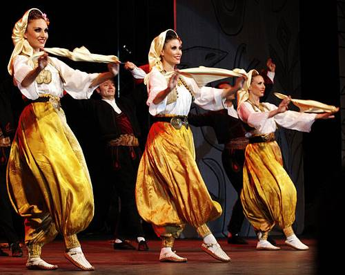
Source : https://tinyurl.com/ycjjopvy
By Petar Milošević [CC BY-SA 3.0 (https://creativecommons.org/licenses/by-sa/3.0)], from Wikimedia Commons
Au pied des montagnes nous faisons halte à une mehana au bord de la route pour déjeuner. Une diligence quotidienne, avec quatre chevaux de front, fait le trajet des Balkans de Niš à Sofia, Bulgarie, l'une d'elles est arrétée à la mehana pour se rafraichir et pour changer les chevaux. Les collations à ces mehanas ne sont pas toujours du goût des voyageurs, lesquels presque toujours se pourvoient de leurs propres provisions. Le pain proposé à cette mehana est uniquement le pain commun, noir, courant dans cette région et un gentleman apprenant de Mr Popovitz que je n'ai pas le goût formé au pain noir, extrait de son bagage une grande miche d'excellent pain au lait et nous l'offre aimablement ; nous nous approvisionnons de portions de hune-hen fabrica et de vin à la mehana et faisons un excellent repas. Que hune-hen fabrica soit du hongrois courant pour poulet cuit, ou si Igali a forgé le mot spécialement à notre intention, je ne saurais le dire. Quoi qu'il en soit, avant que nous quittions Belgrade, Igali confia le secret à Mr Popovitz que j'étais pour ainsi dire possédé d'une sorte d'appétit sauvage pour le hune-hen fabrica et les cerises, trois fois par jour, avec pour conséquence que Mr Popovitz avec prévenance commande ces mets toutes les fois que nous nous arrêtons. Après déjeuner les roulements de tonnerre sur les montagnes nous avertissent qu'à moins que nous souhaitions faire l'expérience pour la nuit du confort douteux de la mehana au bord de la route, nous fairions mieux d'aller au plus vite au village de Bela Palanka, à douze kilomètres par des routes assez accidentées. En quarante minutes nous arrivons à la mehana de Bela Palanka, un peu avant que la pluie commence. Il n'y a que vingt kilomètres jusqu'à Pirot, près de la frontière bulgare, jusqu'où mon compagnon est moins enclin à m'accompagner, mais nous devons changer ce plan et restons à Bela Palanka [[ Ndt : petite ville du sud-est de la Serbie, environ 8200 habitants de nos jours ]].
Bela Palanka autrefois
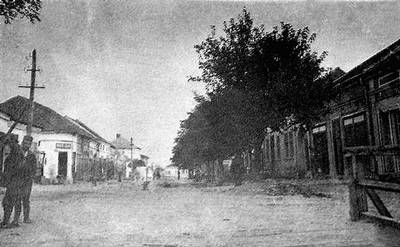
Source : Office du tourisme de Bela Palanka http://turizambelapalanka.com/o-palanci/
La pluie tombe à verse toute la nuit, transformant la modeste Nišava en un torrent jaune grondant et les rues de ce petit village des Balkans en ornières boueuses. Dimanche matin il pleut encore et comme Mr Popovitz doit être rentré pour jeudi, pour remplir ses obligations de correspondant avec l'étranger de la Banque Nationale de Serbie à Belgrade et que les routes ont été rendues impraticables pour un bicycle, il est contraint de louer un attelage avec un chariot pour le transporter de retour lui et sa machine par la route montagneuse jusqu'à Niš, tandis que moi je dois passer le dimanche dans la boue, la pauvreté et l'inconfort – sans parler d'une seconde nuit au milieu des puces – d'une mehana d'un village oriental. Nous avons seulement fait cinquante kilomètres dans les montagnes hier, mais le kilométrage global que nous avons couvert au cours des trois journées passées ensemble depuis Belgrade est satisfaisant et Mr Popovitz s'est montré un compagnon intéressant et des plus plaisants. Il a servi sous la bannière de la Croix-Rouge lors de la guerre entre les Turcs et les Serbes alors qu'il était au plus âgé de quatorze ans et reste un ardent patriote.
Mon dimanche à Bela Palanka me convainc qu'un village oriental c'est superbe si on n'y vit pas. Par temps sec c'est déjà suffisamment désagréable, mais aujourd'hui c'est une compilation désordonnée de villageois misérables, de cochons, de canards, d'oies, de poulets et de chiens barbottant dans les rues boueuses. Le vêtement des villageois orientaux est pittoresque ou à tout le moins différent, selon ce que pense l'observateur. Le fez rouge ou le turban, l'accessoire vestimentaire qui sert de coiffe, et la longue écharpe rouge enroulée et enroulée autour de la taille jusqu'à atteindre une largeur de quarante-cinq centimètres, c'est pitttoresque pout tout le monde ; mais quand on en arrive au pantalon dont le fond pendille au niveau des mollets, une personne imprégnées des idées de l'Ouest considèrera tout naturellement que si la ligne entre le pittoresque et le sac de jute de cinquante kilos doit être tracée quelque part, c'est ici qu'elle doit l'être. En notant combien ce style disgracieux rappelant un sous-vêtement prévaut en Orient, je me sens de moins en moins à l'aise, de peur que peut-être quelque chose de sérieux m'arrive et que je sois obligé de rouler à bicycle avec une paire de ces originaux ce qui serait toutefois une prouesse quasiment impossible à moins d'amasser la zone excédente en une boule et la porter comme un attribut. Je ne peux pas croire que le sort, cruel comme il peut l'être, ait en réserve pour moi ou pour quelque autre cycliste quelque chose de si ridicule.
Bien que les femmes turques aient presque complètement disparu de Serbie depuis sa séparation d'avec la Turquie, elles ont laissé jusqu'à un certain degré une empreinte sur les femmes des villages à la campagne ; ainsi que je le constate aujourd'hui, bien que à Bela Palanka les jeunes femmes dans leurs vêtements du dimanche contrairement à la norme ne portent pas le yashmak, mais un accessoire vestimentaire qui couvre partiellement leur visage, tout leur comportement donne l'impression que leur seul but dans la vie est d'apparaître aux yeux du monde comme le sommet de la décence ; elles marchent le long des rues d'une allure des plus circonspectes, ne regardent ni à droite ni à gauche, ne s'arrêtent jamais en cours de route pour converser avec les autres, ne prêtent aucune sorte d'attention aux hommes. Les deux propriétaires de la mehana où je suis installé sont matière à une étude sur la nature humaine. Avec leur sordide petite porcherie en guise de mehana dans ce village misérable, ils sont en train d'accumuler progressivement une fortune. A chaque fois qu'un voyageur malchanceux tombe entre leurs griffes, ils tirent un profit de l'incident. Ils se tiennent debout en attente, dans la salle qui ressemble à une boite ; tout leur stock consiste en un peu de vin dilué avec de la gomme de mastic, si on leur commande un morceau de pain noir et une tranche de fromage l'un inscrit la commande dans un livre pendant que l'autre la déniche d'un petit placard où ils conservent une quantité famélique de comestibles [[ Ndt : Le mastic est une matière issue de la sève d'un arbuste méditerranéen, utilisée pour la réalisation d'une résine (appelée à tort gomme) à l'odeur prononcée, employée en pâtisserie, en confiserie, pour la fabrication de liqueurs etc... Ref : Wikipedia https://tinyurl.com/y9lscula ]] ; quand celui qui fait office de serveur a mis devant vous la portion sans valeur, il va se pencher sur le livre pour s'assurer que le numéro deux a indiqué la somme correcte ; bien que la valeur totale de la nourriture ne doive pas dépasser deux pences, cette paire de pédants va de fait se concerter au sujet du montant à marquer. Avant que les ombres du dimanche soir se soient étirées, je suis arrivé à la conclusion que si ces deux-là sont des specimen communs du juif oriental, ce sont sous l'aspect financier des gens complètement dépravés.
Ce dimanche la pluie a cessé peu après midi,et, bien que les routes soient quasiment impraticables, lundi matin à cinq heures je prends la route en direction du sud, me traînant dans la boue sur les routes de montagne, boue qui m'oblige régulièrement à m'arrêter et user du grattoir. Après que soit franchi le faîte des montagnes entre Bela Palanka et Pirot, la route qui descend dans la vallée s'améliore et me permet d'atteindre relativement rapidement Pirot, où mon passeport est contrôlé et bénéficie d'un "visé" par les officiels serbes en vue du passage de la frontière serbo-bulgare à environ trente kilomètres au sud. Pirot est un grand et important bourg et mon apparition est le signal à plus d'agitation que les Piroters n'en ont vu depuis des jours.
Pirot autrefois
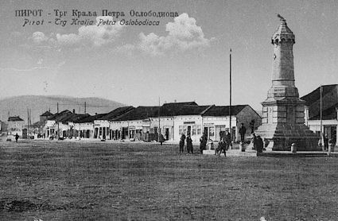
Source : Histoire du vieux Pirot http://momcilovac.blogspot.com
Pendant que je suis en train de collationner de pain et de café à l'hôtel, la rue principale se remplit d'une foule comme lors d'une fête, les visages des adultes irradient de la même anticipation réjouie dans l'attente de ce qu'ils espèrent voir quand je sortirai de l'hôtel que les figures crasseuses des jeunes guenilleux autour d'eux. Les citoyens en vue qui sont allés à Paris ou à Vienne et en ont retenu quelque chose quant aux sortes de routes qu'un cycliste nécessite, ont partagé le secret avec nombre de leurs concitoyens et s'ensuit une ruée générale vers la grand-route qui mène hors la ville par le sud. Cette route est considérée comme étant des meilleures, et les gens décidés qui ont marché, roulé, ou conduit jusque là dans le but d'être à la meilleure place pour me voir passer, sont récompensés en voyant ce qu'ils n'ont encore jamais vu : un cycliste en train de foncer sous leurs yeux à vingt kilomètres heures. L'exultation générale est telle que sur une considérable distance je roule entre une double rangée de chapeaux soulevées et de congratulations unanimes, et le bruit des applaudissements qui enflent se répand tout le long.
Deux citadins, plus déterminés encore que les autres ont décidé de me suivre avec équipage et chariot léger jusqu'à un poste routier dix kilomètres plus loin où les passeports sont contrôlés. Sut tout le trajet la route est plate et bien roulable ; les chevaux serbes sont comme les poneys des indiens de l'Ouest, petits mais forts et résistants et quoique je m'active avec énergie, le fouet leur est appliqué sans retenue si bien qu'à l'arrivée nous freinons ensemble devant le poste routier ; mais les flancs de leurs poneys sont blancs d'écume. Le préposé aux passeports est tellement ravi du récit de notre course telle que les autres lui racontent, qu'il me propose un morceau de sucre et un verre d'eau, un rafraîchissement couramment consommé dans ce pays.
Une troisième fois encore je suis arrêté sur la route par un fonctionnnaire et requis de présenter mon passeport, et encore une fois au village de Dimitrovgrad [[ Ndt : village de Serbie, environ 1000 habitants lors du passage de Stevens. Ref : Caribrod-Dimitrovgrad http://caribrod-dimitrovgrad.blogspot.com ]], juste à la frontière avec la Bulgarie, où j'arrive vers dix heures. Je présente aux fonctionnaires bulgares la petite carte tamponnée qui m'avait été donnée à cette fin au dernier contrôle serbe, mais il n'a pas l'air de la comprendre et demande à voir le passeport. Je présente mon passeport anglais, il l'examine, et directement m'assure du respect officiel de la Bulgarie pour les Anglais en me prenant chaleureusement par la main. Le bureau des passeport est au deuxième étage d'une masure en terre, on y monte par une volée de marches d'un escalier extérieur délabré. Mon bicycle est resté appuyé contre le bâtiment et au cours de mon bref entretien avec le fonctionnaire une foule bruyante de Bulgares à demi civilisés s'est rassemblée, l'examine et fait des remarques sans se gêner à son sujet et sur le mien. Le fonctionnaire, embarrassé par la grossièreté et l'ignorance de ses compatriotes se penche à la fenêtre et d'une voix réprobatrice explique à la foule que je suis un simple individu et pas un charlatan itinérant en train de traverser le pays pour faire des exhibitions, et leur conseille de mettre en valeur le caractère digne du Bulgare en se dispersant immédiatement. Mais la foule ne montre pas le moindre signe d'éparpillement ; peu lui importe que je sois un personnage public ou privé ; ils n'ont jamais rien vu avant tel que moi et le bicycle et cette unique opportunité dans une vie ne peut être passée outre à la légère. C'est une masse sauvage et pas domestiquée que ces Bulgares, ici à Dimitrovgrad, sans guère de retenue.
Quand je débouche, le silence de l'espoir impatient s'empare de la foule, puis explose en un hurlement de joie de trois cents gorges déployées quand je monte en selle et m'élance en Bulgarie.
Dimitrovgrad en 1902.
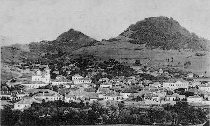
Source : http://caribrod-dimitrovgrad.blogspot.com
Femme filant avec un fuseau
tableau du peintre portugais Artur José de Sousa Loureiro
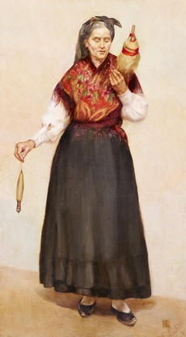
Source : WikipediaDomaine public
Et il y a encore des gens qui ergotent sur la possibilité de faire deux choses à la fois! Que ces pauvres femmes aient biné des pommes de terre, porté l'enfant et filé la laine en même temps toute la journée je ne suis pas en mesure de le dire, n'en ayant pas été témoin, cependant je ne serais pas vraiment surpris qu'elles l'aient fait.
Fin du chapitre 6
Page précédente - Page suivante (chapitre 8, à venir)
ADMINISTRATIVIA
Dernière mise à jour de cette page : 02 juin 2018
URL : https://orkic.github.io/bicygonzo/atwoab/chap7/index.html
Contactez-nous : Contact
Website © Copyright - ef. Bicy Gonzo.